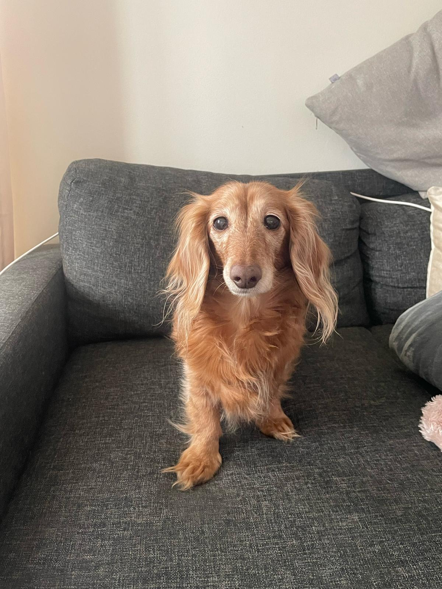
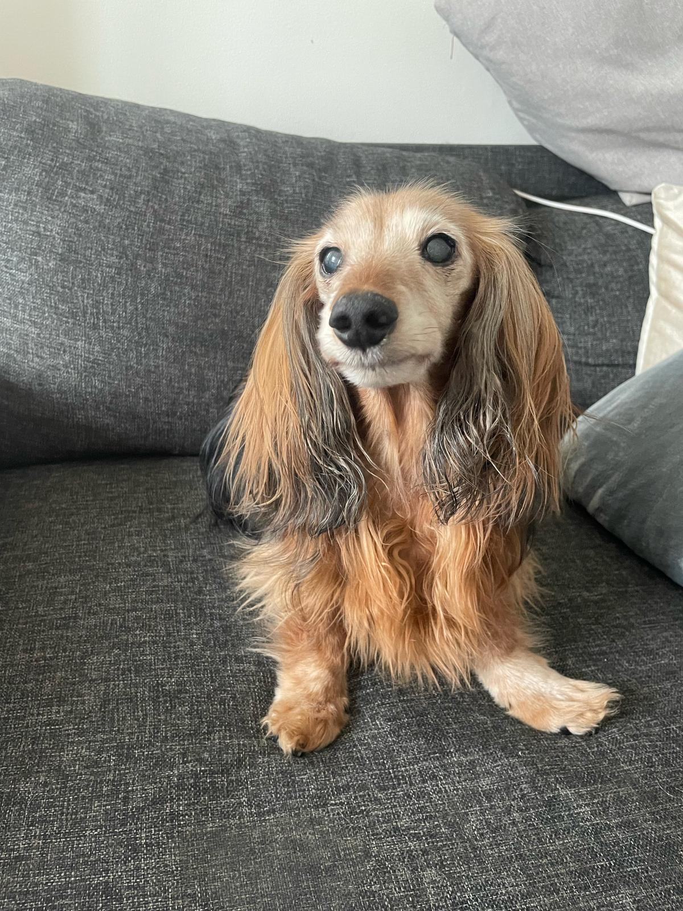

Seikkailuja, kuvia ja hassuja hetkiä kahden mäyräkoiran elämästä!
Tässä ovat Puti ja Sara!

Puti
- Rotu: Pitkäkarvainen kääpiömäyräkoira
- Väri: Punainen
- Ikä: 14,5 vuotta
- Sukupuoli: Narttu
- Luonne: Seikkailunhaluinen, utelias ja leikkisä

Sara
- Rotu: Pitkäkarvainen kääpiömäyräkoira
- Väri: Punainen
- Ikä: 16,5 vuotta
- Sukupuoli: Narttu
- Luonne: Rauhallinen, hellä ja itsepäinen